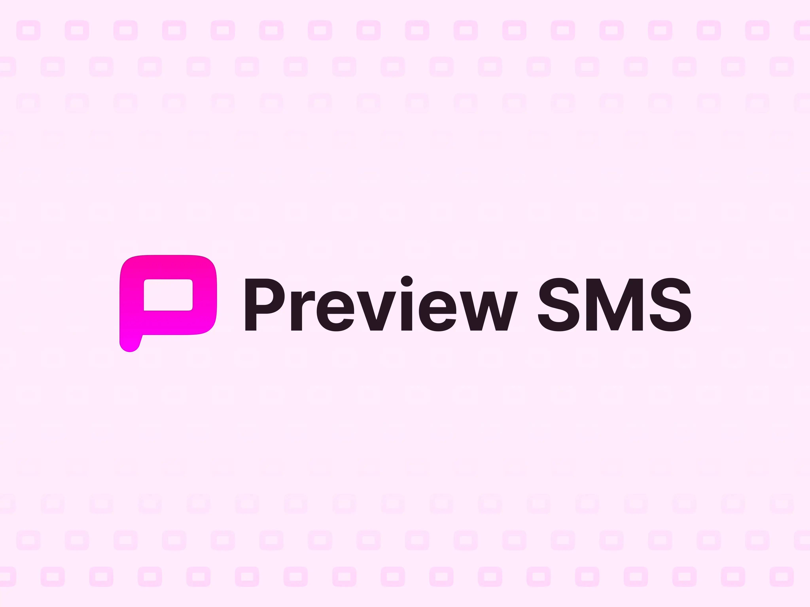

There’s a a resurgence of skeumorphism going on in UI design these days. Coined “new-morphism”, it’s the concept popularized by Apple in the early 2000’s to make interfaces that look like the real-world equivalent. Paper, felt, metal, water, and other materials found their way into UI design. It was an effort to put metaphors in front of users from real world objects in the hope that this would make transitioning to a digital interface more seamless.
I don’t think there’s anything wrong with skeuomorphism old or new, but I personally don’t find the need to introduce it into my work. What I do find interesting and useful is selective depth. Many applications these days have a variety of layers to them. These layers slide in, appear over top of, sit above and interact between UI elements. In order to better separate these elements from other parts of the interface, designers can employ a host of visual cues such as borders, shadows, color variation, size differentiation, font selection, background blurs, etc. This is great for most instances. What I find lacking in this approach, is even with all of the previously mentioned differentiations, the same level of depth is applied to the UI elements.
When designing Preview SMS, I’ve elected to use selective depth to further emphasize different portions of the UI (namely the most important to the user and to the business model) in the hopes that these elements stand out above all of the other elements to prioritize the actions there first. From there, other elements show selective depth when interacted with, whether by hovering over an element when users have a trackpad/mouse, focusing on an element using keyboard navigation, and/or clicking/tapping the interactive element. It’s only when these interactions are taken that non-primary elements are given this selective depth treatment.
Take the Filters section of the application, for example. The tab and dropdowns are easily visible, with ample contrast, and presented in a familiar style to make it easy for users to understand the actions they make take. However, they’re not overly emphasized, until a user interacts with them. The primary action that I want users to take in the navigation bar (if they haven’t already) is to click Upgrade and open up a modal to view pricing options.
All Blog Posts
Selective Depth: Designing UI That Informs
April 18, 2024
Related Posts

Launching Preview SMS
May 13, 2024
- Preview SMS
- React
- Product Design
After months spent designing, redesigning, refining, scrolling Stackoverflow, making failed API calls, encountering build errors, and code rewrites later, I’m finally launching Preview SMS...
Most MVP’s Aren’t Enough
December 11, 2023
- Preview SMS
- Product Design
When I started creating Preview SMS, I imagined a quite small feature list and just enough functionality to prove that this concept is worth exploring. This was the initial to-do list...